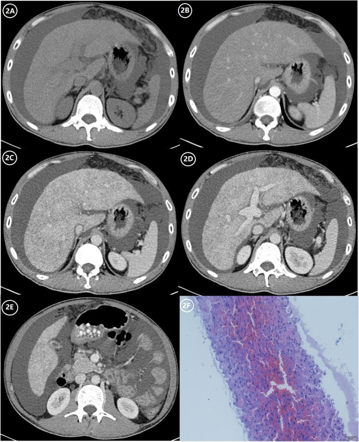
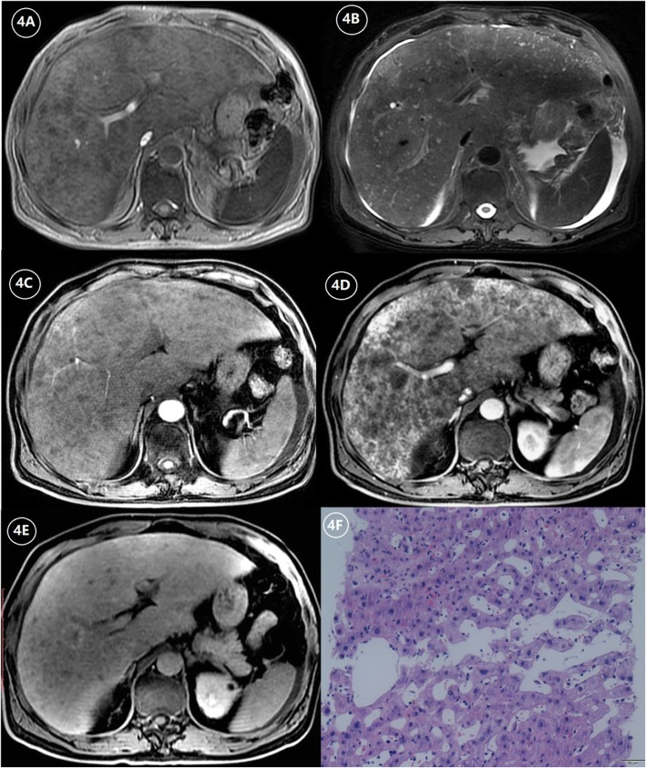
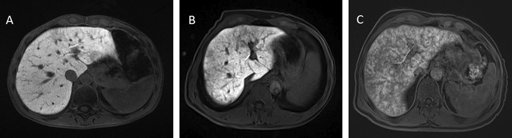
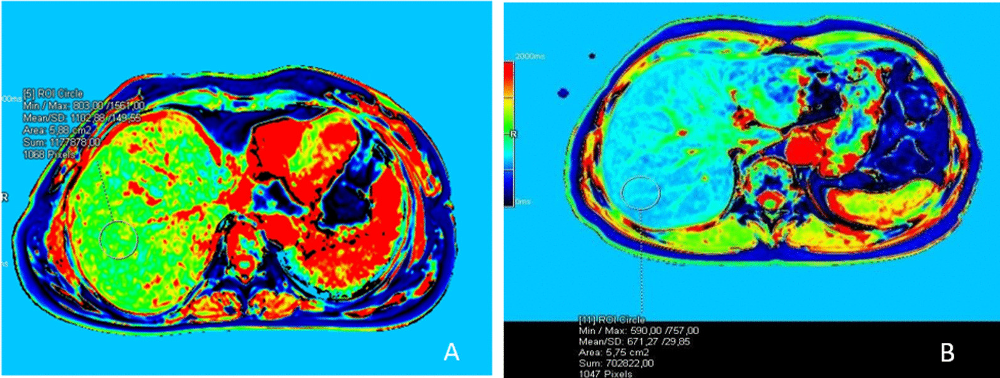
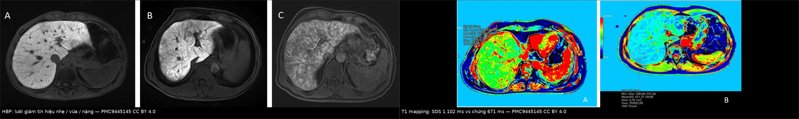

1910 — Hội chứng tắc xoang gan (SOS/VOD): gan to + ngấm "da báo", lưới giảm tín hiệu > 50% trên HBP = nặng, MRE 2,82 kPa / Hepatic sinusoidal obstruction syndrome (veno-occlusive disease)
Tags: pattern:ngam-khong-dong-nhat pattern:gan-ung-huyet pattern:gan-to pattern:phu-quanh-cua pattern:giam-tin-hieu-luoi vung:gan vung:xoang-gan score:EBMT-2023 score:MRE-LSM protocol:Doppler protocol:CT-3-thi protocol:MRI-HBP protocol:MRE
Mức chắc chắn (certainty): tổng hợp y văn (literature synthesis) — số liệu lấy từ 5 bài open access đã đọc toàn văn: Zhang Y et al., Insights Imaging 2019 (PMC6868080, CC BY 4.0 — tổng quan hình ảnh SOS); Ichikawa H et al., Bone Marrow Transplant 2024 (PMC10994840, CC BY 4.0 — 161 ca ghép tế bào gốc, tiêu chuẩn EBMT 2023); Poker A et al., Insights Imaging 2022 (PMC9445145, CC BY 4.0 — MRI + MR elastography ở SOS do oxaliplatin); Bohte AE et al., Pediatr Radiol 2022 (PMC8741687, CC BY 4.0 — hình ảnh SOS ở trẻ); Escobar Gil T et al., Cureus 2025 (PMC11970208, CC BY 4.0 — ca nguyên văn, CT/MRI/US). Thêm dữ liệu dài hạn từ Alvarado-Tapias E et al., JHEP Rep 2026 (PMC13598180, CC BY 4.0) và cơ chế oxaliplatin từ Cells 2019 (PMC6952805, CC BY 4.0).
Câu hỏi gốc của bài: bệnh nhân ngày +10 sau ghép tế bào gốc đồng loài, tăng 4 kg trong 5 ngày, bụng to, bilirubin 22,2 mg/dL, đau vùng gan; siêu âm gan 17,6 cm, túi mật dày 11 mm, tĩnh mạch cửa 13 mm; CT bụng gan to, ngấm thuốc lổn nhổn từng vùng, phù quanh cửa, cổ trướng. Vậy: SOS hay hẹp dòng ra (HVOO)? có cần sinh thiết? khi nào bắt đầu defibrotide, và dấu hiệu nào trên MRI nói "đã nặng"? Điểm tựa: SOS không phải bệnh của một mạch lớn mà là bệnh của vi tuần hoàn xoang gan: tế bào nội mạc xoang bị tổn thương → bong, tạo vi huyết khối, xơ hóa tiểu tĩnh mạch trung tâm → sức cản sau xoang tăng → ứ máu xoang → gan to, tăng áp cửa. Vì tổn thương lan tỏa, không khu trú, nên không có chỗ hẹp để nong, không có chênh áp khu trú để đo — đây chính là điểm phân biệt với 1906 (HVOO) và là lý do đặt stent là sai lầm.
1. Tổng quan — vì sao SOS làm gan ngấm "da báo", HBP có "lưới" và MRE cứng hơn
A. Bệnh học (pathology) và cơ chế:
- Định nghĩa: tổn thương nội mạc xoang gan dẫn tới tắc không do huyết khối của tiểu tĩnh mạch trung tâm tiểu thùy (centrilobular venules) do hoại tử và bong lớp dưới nội mạc. Hậu quả: ứ máu xoang → phì đại tế bào gan → tăng áp cửa, cuối cùng xơ hóa/xơ gan cục bộ.
- Nguyên nhân theo nhóm:
- Ghép tế bào gốc tạo máu (HSCT): độc tính của phác đồ điều kiện hóa (busulfan, cyclophosphamide, melphalan) — thể kinh điển, xuất hiện ≤ 21 ngày sau ghép.
- Oxaliplatin (hóa trị ung thư đại trực tràng di căn gan): tổn thương xoang 19–52% trên mô bệnh; gan "blue liver" khi mổ.
- Alkaloid pyrrolizidine (thuốc nam, "tǔ sān qī"): SOS mạn, thường muộn, không rõ thời điểm.
- Thuốc khác: inotuzumab ozogamicin, azathioprine/6-thioguanine, actinomycin D ở trẻ.
- Sau ghép gan: hiếm, gắn với tổn thương bảo quản/thiếu máu–tái tưới máu; hình ảnh giống HVOO nhưng không có hẹp khu trú — điểm này là suy luận của nhóm từ cơ chế, chưa có con số riêng trong các nguồn của lượt này.
- Vì sao gan ngấm thuốc "da báo" (mottled/patchy): ứ máu xoang không đều giữa các tiểu thùy (mức tổn thương nội mạc khác nhau) → vùng còn tưới máu ngấm mạnh, vùng ứ huyết/hoại tử ngấm kém. Vì vậy tổn thương không có bờ hình khối, không theo lãnh thổ mạch, và thay đổi giữa các thì — khác di căn (bờ tròn, ngấm theo thì) và khác áp-xe (viền ngấm, có dịch).
- Vì sao "phù quanh cửa" (periportal edema): ứ huyết làm dịch thoát vào khoảng cửa → dải giảm ngấm ôm theo nhánh cửa, tăng T2, giảm T1, không hạn chế khuếch tán (chỉ là nước tự do) — không phải u.
- Vì sao túi mật dày và tĩnh mạch cửa giãn: cùng một cơ chế tăng áp cửa + ứ dịch → thành túi mật > 6 mm, tĩnh mạch cửa > 12 mm, tĩnh mạch gan < 3 mm (bị chèn bởi nhu mô phù), cổ trướng.
- Vì sao MRE cứng hơn dù chưa xơ: elastography đo độ cứng cơ học, và ứ máu + phù nội bào cũng làm mô cứng lên. Vì vậy MRE tăng không đồng nghĩa xơ hóa — đây là cạm bẫy khi theo dõi bệnh nhân ung thư (xem mục 5).
- Vì sao HBP (gadoxetate) có "lưới giảm tín hiệu": gadoxetate được hepatocyte bắt qua OATP1B1/B3 rồi thải qua MRP2. Ở SOS, vùng ứ huyết/giảm tưới máu làm giảm bắt thuốc cục bộ → lưới giảm tín hiệu hình mạng (reticular hypointensity) trên thì gan mật, nổi bật hơn hẳn so với thì thường. Mức lan của lưới tương quan với độ nặng và không đặc hiệu cho nguyên nhân.
- Vì sao bilirubin tăng MUỘN: bilirubin tăng do ứ mật và suy chức năng gan, xuất hiện sau giai đoạn tăng cân và gan to. Vì vậy chờ bilirubin ≥ 2 mg/dL mới chẩn đoán là chờ quá muộn — tiêu chuẩn EBMT 2023 đã sửa đúng điểm này.
B. Ngưỡng định lượng bắt buộc (cửa 1 Argon):
| Đại lượng | Con số đã kiểm chứng | Ý nghĩa thực hành |
|---|---|---|
| Tần suất SOS sau ghép tế bào gốc đồng loài | 2–15% (PMC10994840) | Thể nặng có tử vong rất cao → chẩn đoán sớm là yếu tố sống còn |
| Tần suất ở TRẺ sau HSCT | ~20–60% (PMC8741687) | Trẻ có phác đồ điều kiện hóa myeloablative nguy cơ cao nhất |
| Tổn thương xoang do oxaliplatin | 19–52% trên mô bệnh; loạt 154 ca cắt gan: 51% có giãn xoang/xuất huyết vi thể (PMC6952805) | "Blue liver" khi mổ là biểu hiện đại thể của SOS mạn |
| Lách to ≥ 50% khi đang hóa trị | 55% có tổn thương xoang vừa–nặng khi cắt gan (PMC6952805) | Lách to là dấu hiệu theo dõi rẻ tiền trên MRI/CT định kỳ |
| Tiêu chuẩn Baltimore / Seattle sửa đổi | bilirubin ≥ 2 mg/dL + tăng cân ≥ 5% + gan to/đau + cổ trướng, trong 21 ngày sau HSCT | Độ nhạy thấp ở thể không vàng da — đây là lý do có tiêu chuẩn mới |
| Tiêu chuẩn EBMT 2023 | 3 mức: probable / clinical / proven; bỏ giới hạn 21 ngày, thêm giảm tiểu cầu tiêu thụ/kháng truyền; phân độ nặng có SOFA | Probable giúp chẩn đoán sớm hơn |
| Lợi ích chẩn đoán sớm của "probable" | chẩn đoán sớm hơn 5,0 ngày (IQR 2–13; p < 0,001) so với "clinical" (PMC10994840) | 5 ngày là cửa sổ để bắt đầu defibrotide |
| Tỉ lệ KHÔNG vàng da lúc chẩn đoán | 66% (35/53) ca "probable" có bilirubin < 2 mg/dL (PMC10994840) | Không chờ vàng da — đây là bẫy chết người |
| Thành phần lúc chẩn đoán "probable" | tăng cân 75%, cổ trướng 85%, gan to đau 21%, bilirubin 34%, siêu âm gợi ý 6% (PMC10994840) | Tăng cân + cổ trướng là dấu hiệu sớm nhất |
| Độ nhạy/đặc hiệu của bộ tiêu chuẩn | Seattle sửa đổi 95,0%/75,2%; probable 100%/76,6%; clinical 100%/97,9% (PMC10994840) | Probable: độ nhạy 100% nhưng dương tính giả ~23% → cần theo dõi, không cần sinh thiết ngay |
| Sống còn 100 ngày | "clinical" SOS 52,2%; "probable" đơn thuần 86,2% vs không SOS 94,3% (p = 0,012) (PMC10994840) | Ngay probable đã làm giảm sống còn → không được coi là "nhẹ" |
| Siêu âm B-mode | thành túi mật > 6 mm, tĩnh mạch cửa > 12 mm, tĩnh mạch gan < 3 mm, lách to, cổ trướng (PMC6868080) | Bộ dấu hiệu rẻ, làm được tại giường |
| Doppler | phổ tĩnh mạch gan một pha (mất ba pha), vận tốc cửa giảm 10–15 cm/s, có thể đảo dòng cửa (hepatofugal) (PMC8741687) | Đảo dòng cửa từng đoạn có thể xuất hiện trước triệu chứng |
| Đàn hồi gan (SWE) | 11 kPa ở ca SOS nhẹ–vừa (bình thường 5–6 kPa) (PMC8741687) | Tăng rất sớm, trước khi bilirubin tăng; cần giá trị nền |
| Vận tốc tĩnh mạch gan | có thể > 120 cm/s giai đoạn sớm/bán lâm sàng rồi bình thường hóa (PMC8741687) | Tăng vận tốc là bù trừ, không phải hẹp |
| Chỉ số kháng động mạch gan | 0,74 (biên) ở ca SOS nhẹ (PMC8741687) | Không đặc hiệu, chỉ hỗ trợ |
| HBP: phân độ theo "lưới" | nhẹ < 20%** nhu mô, **vừa 20–50%**, **nặng > 50% (PMC9445145) | Phân độ bán định lượng dùng được trên lâm sàng |
| MRE (độ cứng gan) | SOS 3,14 ± 0,45 kPa vs chứng 2,60 ± 0,50 kPa (p = 0,01); cut-off 2,82 kPa, AUC 0,88, Se 78% / Sp 81% (PMC9445145) | Ngưỡng 2,82 kPa dùng để phân biệt với gan không SOS sau oxaliplatin |
| Độ cứng theo độ nặng | 2,80 ± 0,22 (nhẹ) → 3,00 ± 0,33 (vừa) → 3,65 ± 0,28 kPa (nặng); p = 0,002 (PMC9445145) | Càng nặng càng cứng, nhưng chồng lấp nhiều |
| cT1 (T1 đã hiệu chỉnh) | SOS 1181 ± 151 ms vs chứng 1032 ± 129 ms (p = 0,005); cut-off 1101 ms, AUC 0,88, Se 80% / Sp 70% (PMC9445145) | T1 mapping tăng do phù/ứ huyết |
| T2 | SOS 50,29 ± 3,6 ms vs chứng 44 ± 3,9 ms (p = 0,01) (PMC9445145) | T2 tăng = nước tự do, không phải tế bào |
| Defibrotide | 6,25 mg/kg TM mỗi 6 giờ, tối thiểu 21 ngày (PMC11970208) | Bắt đầu càng sớm càng tốt khi đã chẩn đoán |
| Ca nguyên văn (đáp ứng) | bilirubin 22,2 → 2,4 mg/dL trong 6 ngày sau khởi trị (POD 16 → 22) nhưng bệnh nhân tử vong POD 34 do suy đa tạng + xuất huyết (PMC11970208) | Đáp ứng sinh hóa không đồng nghĩa sống còn |
| Hậu quả dài hạn | 45% (10/22) phát triển dấu hiệu tăng áp cửa, 36% có biến chứng gan; tích lũy 27% ở 3 năm; dùng defibrotide HR 0,096 (p < 0,001) (PMC13598180) | SOS không kết thúc khi ra viện — cần theo dõi nhiều năm |
C. TẠI SAO ảnh trông như vậy (vật lý hình ảnh):
- CT thì cửa: tín hiệu ∝ lượng iod trong nhu mô. Ứ huyết xoang làm giảm thể tích máu chứa trong xoang, còn phù tế bào làm tăng khoảng kẽ → ngấm không đều, dạng bản đồ (map-like). Vì tổn thương ở mức tiểu thùy, ranh giới không theo phân thùy và không có vỏ bao.
- MRI T1/T2: phù/ứ huyết làm T1 giảm, T2 tăng; máu ứ trong xoang có thể làm T2 giảm cục bộ (do hiệu ứng từ tính của deoxyhemoglobin) — vì vậy hình ảnh có thể "lổn nhổn cả hai chiều", đây là lý do không thể chẩn đoán chỉ bằng một chuỗi xung.
- HBP (gadoxetate thì 20 phút): tín hiệu phản ánh chức năng bắt thuốc của hepatocyte, không phải mô học. Vùng ứ huyết giảm bắt thuốc → lưới giảm tín hiệu. Đây là dấu hiệu chức năng, nên hồi phục được khi tái thông huyết động — khác xơ hóa thật (giảm tín hiệu không hồi phục, kèm co kéo bờ gan).
- MRE: sóng cơ học 60 Hz lan trong gan; độ cứng (kPa) tỉ lệ với mô đun đàn hồi. Ứ máu và phù làm tăng độ cứng nên MRE SOS tăng dù chưa xơ — sai số hệ thống khi so với xơ gan.
- Doppler: phổ một pha của tĩnh mạch gan là dấu hiệu mất đàn hồi và mất truyền sóng nhĩ phải — giống hệt HVOO (1906), nên không dùng để phân biệt hai bệnh; phân biệt phải dựa vào có/không chỗ hẹp khu trú và có/không chênh áp.
2. Mẫu hình + chẩn đoán phân biệt theo vị trí và cơ chế (Gamut)
- SOS LAN TỎA (thể kinh điển): gan to + ngấm không đều toàn gan + phù quanh cửa + cổ trướng + túi mật dày; không có chỗ hẹp. Nguyên nhân: HSCT, oxaliplatin, alkaloid pyrrolizidine.
- SOS KHU TRÚ/nốt (focal SOS, "pseudotumor"): một hoặc vài nốt giảm tín hiệu T1, tăng T2, ngấm kém ở thì cửa, có thể giả u trên CT — bắt chước di căn/HCC. Đây là thể nguy hiểm nhất về chẩn đoán, vì bệnh nhân ung thư đang theo dõi dễ bị gọi là tái phát.
- SOS MẠN → PSVD/tăng áp cửa không xơ gan: sau nhiều năm, bệnh nhân có giãn tĩnh mạch, lách to, giảm tiểu cầu nhưng không xơ gan. Đây là di chứng của chính SOS, không phải bệnh mới.
- Hẹp DÒNG RA (HVOO — bài 1906): cùng bối cảnh "sau ghép gan, gan to, ngấm không đều" nhưng có hẹp khu trú miệng nối tĩnh mạch gan/IVC và chênh áp HV–IVC ≥ 5 mmHg. Đây là hàng phân biệt số 1, và là bệnh điều trị được bằng nong/stent.
- Gan tim (passive congestion): tĩnh mạch chủ dưới và tĩnh mạch gan GIÃN (ngược với SOS: hẹp/không thấy), phù chi dưới, tăng áp lực nhĩ phải; ngấm thuốc "vỏ hạt điều" (nutmeg liver) — giống SOS về hình ảnh, khác ở bối cảnh tim mạch.
- Viêm gan cấp/thải ghép: men gan tăng rất cao (ALT > 1.000 U/L), không có dấu hiệu tăng áp cửa, không có lưới HBP.
- Tắc mật: giãn đường mật trong gan (không có trong SOS), bilirubin tăng trực tiếp, túi mật to nhưng không dày.
- Thâm nhiễm (lymphoma, di căn lan tỏa): gan to nhưng có nốt/bờ khối, hạn chế khuếch tán mạnh (ADC thấp), thường có hạch.
3. Bảng so sánh phân biệt (ma trận đối chiếu)
| Thực thể (entity) | Hình ảnh điển hình (US/CT/MRI) | Chốt vào (rule-in) | Chốt loại (rule-out) | Gợi ý xác nhận |
|---|---|---|---|---|
| SOS sau HSCT (lan tỏa) | Gan to, ngấm "da báo", phù quanh cửa, túi mật > 6 mm, cửa > 12 mm, cổ trướng; HBP lưới giảm tín hiệu | Tăng cân ≥ 5% + cổ trướng + gan to trong bối cảnh HSCT, kể cả bilirubin < 2 mg/dL | Có hẹp khu trú + gradient ≥ 5 mmHg → HVOO, không phải SOS | Tiêu chuẩn EBMT 2023; siêu âm + Doppler; theo dõi cân nặng hằng ngày |
| SOS do oxaliplatin (mạn/PSVD) | Gan bờ gồ ghề nhẹ, lách to, lưới HBP, MRE > 2,82 kPa, cT1 > 1.101 ms | Tiền sử oxaliplatin + lách to ≥ 50% + lưới HBP + tăng áp cửa không xơ gan | Gan bình thường trên HBP + MRE < 2,82 kPa → không SOS | MRI HBP + MRE; đối chiếu mô bệnh khi cắt gan |
| HVOO sau ghép gan (1906) | TM gan giãn, đậm hơn IVC, mất sóng ba pha, ngấm không đều; cửa bình thường | Gradient HV–IVC ≥ 5 mmHg qua chỗ hẹp | Không có chỗ hẹp, gradient bình thường → loại trừ | Chụp mạch + đo áp lực; nong/stent |
| Gan tim (passive congestion) | IVC và TM gan GIÃN, reflux, "vỏ hạt điều", phù chi dưới | Bệnh tim + IVC giãn + reflux TM gan | TM gan < 3 mm, không thấy TM gan → nghĩ SOS | Siêu âm tim; đo áp lực nhĩ phải |
| Viêm gan cấp / thải ghép | Gan to nhẹ, ngấm đồng nhất, không có lưới HBP, không có dấu hiệu tăng áp cửa | ALT/AST > 1.000 U/L + bối cảnh ngừng thuốc/thải ghép | Có lưới HBP + tăng áp cửa → không phải viêm gan đơn thuần | Xét nghiệm gan, sinh thiết nếu cần |
| Tắc mật | Giãn đường mật trong gan, ống mật chủ giãn, túi mật to không dày | Giãn đường mật trên US/CT/MRCP | Không giãn đường mật → loại trừ tắc mật | MRCP / ERCP |
| Focal SOS (giả u) | Nốt T1 thấp, T2 cao, ngấm kém thì cửa, không hạn chế khuếch tán mạnh, có thể nhiều nốt | Bối cảnh hóa trị + nhiều nốt không theo lãnh thổ + ADC không thấp | ADC rất thấp + ngấm viền + tăng kích thước → nghĩ di căn | DWI/ADC + theo dõi 4–8 tuần; sinh thiết nếu không chắc |
| Thâm nhiễm/di căn lan tỏa | Gan to, nốt/bờ khối, hạn chế khuếch tán mạnh | ADC thấp + ngấm thuốc dạng khối + hạch | Lưới HBP lan tỏa không khối → nghĩ SOS | PET/CT, sinh thiết |

Nam 39 tuổi, SOS do thuốc nam chứa alkaloid pyrrolizidine: (2A) không cản quang — gan to, đậm độ không đều, cổ trướng; (2B) thì động mạch — ngấm không đều; (2C–2E) thì cửa/muộn — dạng bản đồ (map-like) rõ, phù quanh cửa; (2F) mô bệnh — giãn xoang, ứ máu. Nguồn: PMC6868080, CC BY 4.0.Ba dấu hiệu "đọc được ngay" trên mọi modality
- Gan to + ngấm không đều KHÔNG có bờ khối — nếu có bờ khối, nghĩ u.
- Phù quanh cửa (periportal collar) + túi mật dày + cổ trướng — bộ ba của tăng áp cửa do ứ huyết.
- "Không có chỗ hẹp" — đây là câu trả lời cho câu hỏi "SOS hay HVOO": SOS = bệnh của vi tuần hoàn, không có chỗ hẹp để can thiệp.

(4A) T1W — gan to, ổ giảm tín hiệu dạng mảng/nốt; (4B) T2W — ổ tăng tín hiệu tương ứng + cổ trướng; (4C–4E) sau tiêm — ngấm không đều; (4F) mô bệnh — giãn xoang. Nguồn: PMC6868080, CC BY 4.0.4. Protocol chụp + hệ phân độ/điểm chuẩn hóa
- Theo dõi lâm sàng (quan trọng hơn hình ảnh): cân nặng và vòng bụng mỗi ngày, cân bằng dịch vào–ra, bilirubin/ALT/AST/tiểu cầu mỗi 1–2 ngày trong 21 ngày đầu sau HSCT. Tăng > 2% cân nặng/ngày hoặc > 5% trong 3 ngày là cờ đỏ.
- Siêu âm + Doppler (đầu tay, lặp lại được): đo kích thước gan/lách, thành túi mật, đường kính tĩnh mạch cửa và tĩnh mạch gan, phổ tĩnh mạch gan (ba pha? một pha?), hướng dòng cửa; đàn hồi gan (SWE) nếu có giá trị nền.
- CT bụng 3 thì: chỉ định khi siêu âm không kết luận, nghi biến chứng (thiếu máu ruột, thủng) hoặc cần loại trừ hẹp mạch lớn. Lát ≤ 1 mm, có thì cửa và muộn.
- MRI gan (khi có điều kiện): T1 in-phase/out-phase, T2 fat-sat, DWI/ADC, và HBP với gadoxetate (20 phút) để phân độ "lưới"; MRE nếu cần định lượng độ cứng. Chống chỉ định: suy thận nặng (gadoxetate), không hợp tác (trẻ nhỏ cần an thần).
- Phân độ nặng theo EBMT 2023: nhẹ / vừa / nặng / rất nặng, dựa trên bilirubin, % tăng cân, suy gan–thận, SOFA; "rất nặng" = suy đa tạng. Ghi rõ phiên bản khi báo cáo.
- Điều trị: defibrotide 6,25 mg/kg TM mỗi 6 giờ, ≥ 21 ngày (PMC11970208); cân nhắc ngừng khi có xuất huyết nặng/giảm tiểu cầu kháng trị (ca nguyên văn phải ngắt nhiều lần); hỗ trợ dịch, albumin, lợi tiểu, lọc máu khi suy thận.
- Theo dõi dài hạn: siêu âm/endoscopy tầm soát giãn tĩnh mạch sau 1 năm ở ca nặng (vì 45% phát triển tăng áp cửa, tích lũy 27% ở 3 năm — PMC13598180).
flowchart TD
A[Bệnh nhân sau HSCT hoặc đang oxaliplatin: tăng cân, gan to, cổ trướng] --> B[Siêu âm + Doppler: gan, lách, túi mật, TM cửa, phổ TM gan]
B --> C{Tăng cân >= 5% HOẶC cổ trướng + gan to, KHÔNG có chỗ hẹp?}
C -->|Không| D[Tìm nguyên nhân khác: HVOO 1906, gan tim, tắc mật, thải ghép]
C -->|Có| E[Chẩn đoán probable SOS theo EBMT 2023 - KHÔNG chờ bilirubin >= 2 mg/dL]
E --> F[Phân độ nặng: bilirubin, % tăng cân, thận, SOFA]
F --> G{Độ nặng}
G -->|Nhẹ| H[Theo dõi sát + dịch, lợi tiểu; MRI HBP/MRE nếu cần xác định]
G -->|Vừa - nặng - rất nặng| I[Defibrotide 6,25 mg/kg mỗi 6 giờ, >= 21 ngày]
I --> J{Đáp ứng: bilirubin và cân nặng giảm?}
J -->|Có| K[Tiếp tục đủ 21 ngày + theo dõi tăng áp cửa dài hạn]
J -->|Không| L[Xem lại chẩn đoán, loại trừ nhiễm trùng, cân nhắc sinh thiết/lâm sàng nặng]
K --> M[Sau 1 năm: tầm soát giãn tĩnh mạch]
5. Biến thể bình thường và cạm bẫy
- Biến thể bình thường / dễ nhầm:
- Ngấm thuốc không đều nhẹ ở thì động mạch do phân bố dòng cửa chưa ổn định — bình thường ở người trẻ, không có cổ trướng, không tăng cân.
- Túi mật dày thoáng qua sau ăn/uống thuốc — đo khi nhịn ăn ≥ 4 giờ.
- Lưới HBP nhẹ (< 20%) có thể gặp ở gan nhiễm mỡ/xơ hóa nhẹ; phải so với nhu mô lành và bối cảnh.
- MRE tăng do ứ máu, không do xơ — đừng gọi "xơ gan" chỉ vì kPa cao.
- Cạm bẫy (pitfall):
- Chờ bilirubin ≥ 2 mg/dL: 66% ca "probable" không vàng da lúc chẩn đoán — chờ là mất cửa sổ defibrotide.
- Đọc "ngấm không đều" rồi đi tìm hẹp: nếu không có chỗ hẹp và gradient bình thường, đó là SOS, không phải HVOO; đặt stent là sai lầm.
- Focal SOS bị gọi là di căn: nốt giảm T1/tăng T2 ở bệnh nhân ung thư → đừng sinh thiết ngay nếu ADC không thấp và nhiều nốt không theo lãnh thổ; chụp lại 4–8 tuần.
- Sinh thiết gan ở SOS: có thể chảy máu nặng do tăng áp cửa + giảm tiểu cầu; chỉ làm khi thật cần phân biệt và đường tiếp cận an toàn (qua tĩnh mạch cảnh).
- Bỏ sót biến chứng: SOS nặng có thể gây thiếu máu ruột, thủng ruột, suy thận — đau bụng tăng + toan chuyển hóa là cờ đỏ ngoại khoa.
- Satisfaction of search: thấy "lưới HBP" rồi dừng, bỏ huyết khối tĩnh mạch cửa (gặp 13–45% trong PSVD) và giãn tĩnh mạch cần xử trí.
6. Tự lượng giá — Blind Quiz ngay trên trang tĩnh
Ca 1 — Ngày +10 sau ghép tế bào gốc: tăng 4 kg, bụng to, bilirubin 22,2 mg/dL. Nhìn CT, mô tả trước.
- Gợi ý: siêu âm gan 17,6 cm, túi mật 11 mm, tĩnh mạch cửa 13 mm, có cổ trướng; không có hẹp mạch lớn.
- Câu hỏi: (1) Mô tả kiểu ngấm thuốc của gan? (2) Vì sao có phù quanh cửa? (3) Chẩn đoán và bước tiếp theo?
Bấm để hiện đáp án (findings + chẩn đoán)
- Findings: gan to, ngấm thuốc không đều dạng bản đồ (map-like) ở thì cửa/muộn, dải giảm ngấm quanh các nhánh cửa (phù quanh cửa), cổ trướng; mô bệnh giãn xoang + ứ máu.
- Chẩn đoán: SOS/VOD sau HSCT — tổn thương vi tuần hoàn lan tỏa, không có chỗ hẹp nên không can thiệp mạch.
- Bước tiếp theo: chẩn đoán theo EBMT 2023 (probable) không chờ bilirubin, phân độ nặng, defibrotide 6,25 mg/kg mỗi 6 giờ; theo dõi cân nặng/creatinin hằng ngày.
- Nguồn ảnh: Zhang Y et al., Insights Imaging 2019, Fig. 2, PMC6868080, CC BY 4.0.
Ca 2 — Bệnh nhân ung thư đại tràng di căn gan đang FOLFOX: MRI thì gan mật có "lưới".

- Câu hỏi: (1) Ba mức (A, B, C) tương ứng độ nặng nào? (2) Vì sao lưới giảm tín hiệu? (3) Có nên ngừng oxaliplatin?
Bấm để hiện đáp án
- Findings: (A) nhẹ < 20%** nhu mô, (B) **vừa 20–50%**, (C) **nặng > 50% — lưới giảm tín hiệu trên thì gan mật (20 phút).
- Vì sao: vùng ứ huyết giảm bắt gadoxetate do tổn thương xoang → giảm tín hiệu dạng mạng, không phải xơ hóa.
- Quyết định: không tự ngừng — đánh giá lách to, tiểu cầu, MRE/cT1, cân nhắc giảm liều/đổi phác đồ cùng ung thư học; nguy cơ chính là gan mất dự trữ khi cắt gan ("blue liver").
- Nguồn ảnh: Poker A et al., Insights Imaging 2022, Fig. 1, PMC9445145, CC BY 4.0.
Ca 3 — Cùng bệnh nhân Ca 2: T1 mapping đo được 1.102 ms ở vùng gan và 671 ms ở người chứng. Có ý nghĩa gì?

- Câu hỏi: Vì sao T1 kéo dài? Ngưỡng nào dùng được? Có thay thế được sinh thiết?
Bấm để hiện đáp án
- Vì sao: phù/ứ huyết làm tăng lượng nước tự do → T1 kéo dài; đây là dấu hiệu mô, không phải chức năng.
- Ngưỡng: trong loạt này cT1 cut-off 1.101 ms cho AUC 0,88, Se 80%, Sp 70%; MRE cut-off 2,82 kPa cho AUC 0,88, Se 78%, Sp 81% — hai phương pháp bổ sung, không thay thế nhau.
- Kết luận: không thay thế sinh thiết trong ca không điển hình, nhưng đủ để theo dõi và phân tầng bệnh nhân đang hóa trị.
- Nguồn ảnh: Poker A et al., Insights Imaging 2022, Fig. 4, PMC9445145, CC BY 4.0.

Trái: phân độ lưới HBP (nhẹ < 20% / vừa 20–50% / nặng > 50%). Phải: T1 mapping — SOS 1.102 ms vs chứng 671 ms. Nguồn: PMC9445145, CC BY 4.0; ảnh ghép letterbox, đã thay đổi (ghép + chú thích).Bài liên quan chéo
- 1906 – Hẹp dòng ra tĩnh mạch gan sau ghép gan (HVOO) — kẻ bắt chước số 1, khác ở chỗ có hẹp khu trú
- 1909 – Hẹp–tắc tĩnh mạch cửa sau ghép gan — mặt dòng vào
- 1901 – Hội chứng Budd–Chiari
- 1902 – Bệnh não gan thể ẩn — di chứng thần kinh của tăng áp cửa/shunt
- 124 – Bệnh mạch máu gan
- 100 – Tổng quan hệ Bụng
Ảnh
- Tên file theo quy ước
1910_sos_Modality_SourceID.jpg; nguồn + giấy phép từng ảnh trongimages/CREDITS.md. - Không có ảnh nào từ Radiopaedia/AuntMinnie trong bài (chỉ dẫn link ở
sources.md).
Không dùng để chẩn đoán độc lập khi chưa có người hướng dẫn.